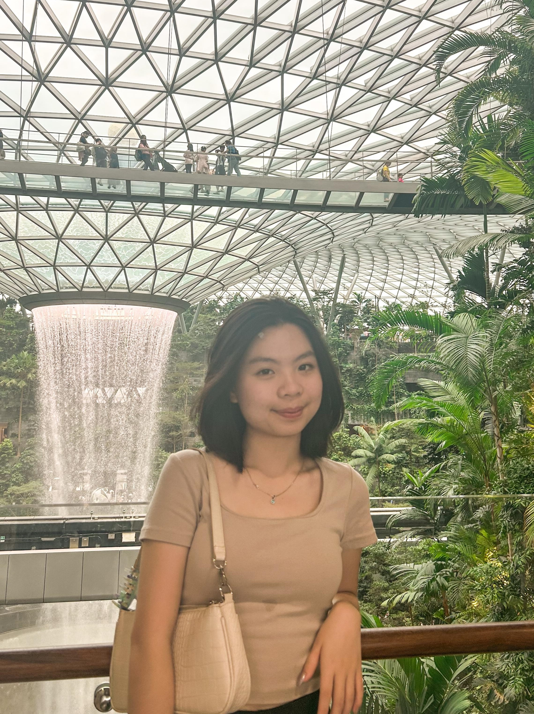
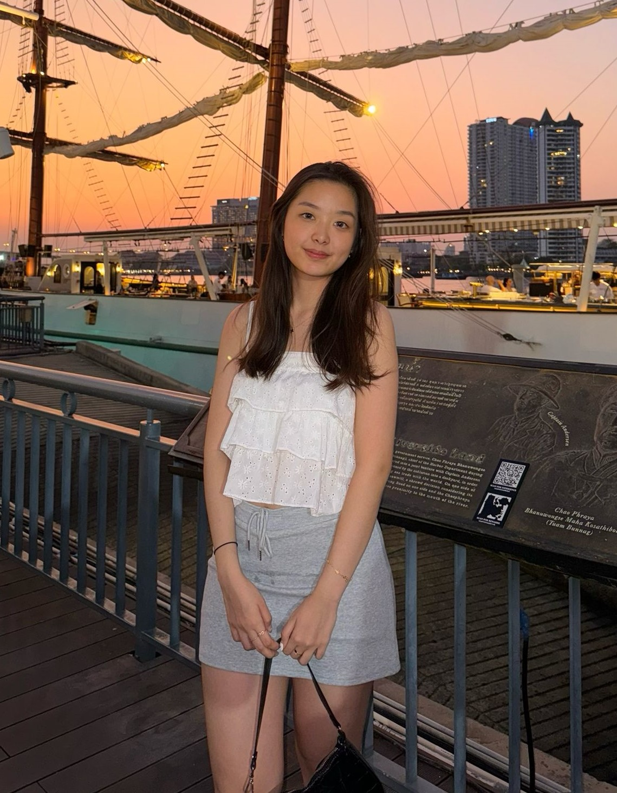
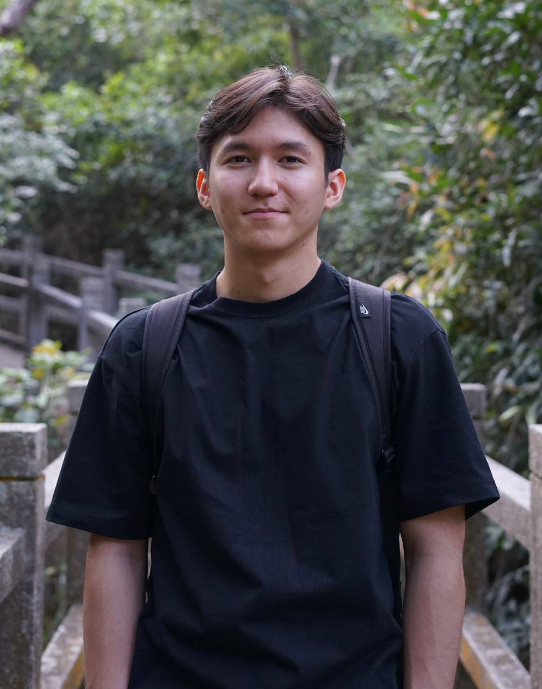
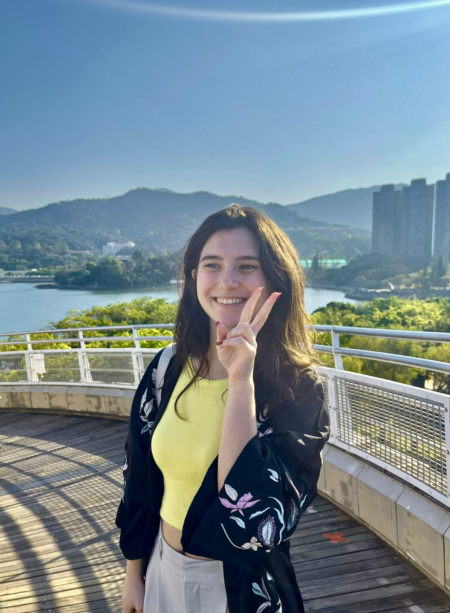

Residence Tutors
Residence Tutors are postgraduate / final year / research students or staff members of the University. They are responsible for assisting the Residence Master of the assigned hall in the provision of pastoral care and intellectual guidance to residents, organizing hall activities, and maintaining peace, order and good administration of the hall.
Current Residence Tutors
Facilities and Finance Tutor
1/F & 2/F RT: Mable (202B)
Hi Wuddies, this is Mable. I am a third-year law student at CityU, and
I'll be your Facilities and Finance Tutor for this year. I am a Hong Kong local, so if you
want to get to know more about Hong Kong culture and food recommendations or if you need help
with translation (Cantonese or Mandarin), feel free to approach me :D (if you are into TTRPG,
let me know!)

Advocacy Tutor
3/F RT: Mustafa (302A)
Greetings, Hall 9 residents! I'm Mustafa, your Advocacy Tutor,
and I'm thrilled to welcome you to our vibrant community here at CityU Hong Kong. Hall 9
isn't just a place to stay; it's a home where diverse individuals come together to create a
dynamic living experience.

ICFD Tutor
4/F RT: Ikhsan (402A)
Yo! I’m Ikhsan, your Fun Day Sports Tutor. I’m majoring in Civil
Engineering but I’m actually into everything. So, if you wanna discuss the fall of Romans
or latest financial news I’m all ears!

Discipline Tutor
5/F & 6/F RT: Jenika (602A)
Hello guys! I’m Jenika, you can call me Jen. I come from Indonesia 🇮🇩, year 3, majoring in Asian and International Studies. I handle hall 9’s social media and the media team. Hit me up for more info about it. If you want to have a chat, don’t hesitate to hit me up! I enjoy talking a lot! 😜

Advocacy Tutor
7/F RT: Cindy (702A)
Hey everyone! 🌟 I'm Cindy Falencia Irawan, a final year computer science major from Indonesia 🇮🇩. When I'm not geeking out 🤓, you'll find me hanging with friends, reading some good books, or binge-watching k-dramas. Hall 9 is like my second home—I love the friendly vibes, awesome friends, and all the cool moments we share. If you're planning to make some fun event in Hall 9 or just want to chit chat, hit me up anytime! Let's make our hall life even more awesome together. 🎉✨

Events Tutor
8/F RT Duman (802B)
Hey Wuddies! This is Duman, a third year Data Science student and one of the Event Tutors in Hall 9. Let’s make this year full of stunning moments, weaving together great experiences and memories. If you need any help, feel free to approach me!

Returning Tutor
9/F & 10F RT: Akul (902A)
Hey everyone!! This is Akul, your returning tutor, I major in Data Science and have been living in Hall 9 for the past 2 years. I welcome you all to this hall, and assure you that your time being here is gonna be full of fun experiences and loads of memories!
Apart from studies, I do enjoy a lot of sports and absolutely love films!!
If you guys need anything, I'm always there to help, so always feel free to reach out and see you all around in Hall ;)

Events Tutor
11/F RT: Nina (1102A)
Hello everyone! 🌺 I'm Nina, a 3rd year student from Slovakia 🇸🇰 majoring in Asian and International Studies 🌏. I am one of the Hall 9's event tutors handling all the events that will await us in the upcoming year, so stay tuned! ✨ If you want to talk about events or just have a friendly chat, feel free to talk to me. See you around!